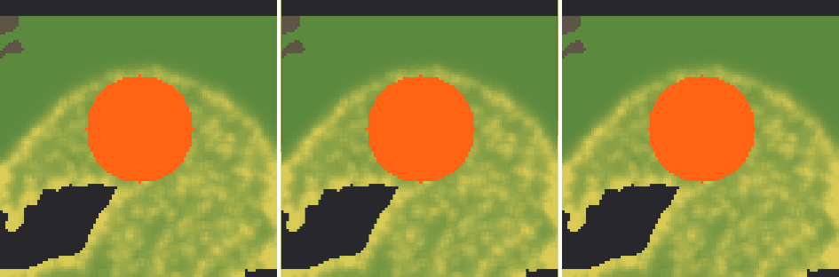

<title>Fire Scares the Slime</title>
<meta name="claude:viewport-fit-sides" content="cover">
<link rel="stylesheet" href="https://fonts.googleapis.com/css2?family=Inter:wght@400;600&family=Space+Grotesk:wght@500;700&display=swap">
<style>
:root { --bg:#f6f3ec; --fg:#1d1b17; --muted:#6b655a; --card:#fffdf8; --line:#e2dccf; --accent:#c4520f; }
@media (prefers-color-scheme: dark) { :root:not([data-theme="light"]) { --bg:#16140f; --fg:#ece6d8; --muted:#a39b8a; --card:#201d16; --line:#37322a; --accent:#f08a47; color-scheme:dark } }
:root[data-theme="dark"] { --bg:#16140f; --fg:#ece6d8; --muted:#a39b8a; --card:#201d16; --line:#37322a; --accent:#f08a47; color-scheme:dark }
body { background:var(--bg); color:var(--fg); font:15px/1.55 Inter, system-ui, sans-serif; padding-left:max(16px, env(safe-area-inset-left, 0px)); padding-right:max(16px, env(safe-area-inset-right, 0px)); padding-block:24px 48px }
main { max-width:1100px; margin:0 auto }
h1, h2 { font-family:"Space Grotesk", Inter, sans-serif; text-wrap:balance; line-height:1.2 }
h1 { font-size:1.9rem; margin:0 0 .3rem }
h2 { font-size:1.25rem; margin:2rem 0 .5rem }
p, ul { max-width:72ch }
.sub { color:var(--muted); margin:0 0 1.2rem }
figure { margin:1rem 0; background:var(--card); border:1px solid var(--line); border-radius:10px; padding:10px }
figure img { display:block; width:100%; border-radius:6px }
.labels { display:grid; grid-template-columns:repeat(2, 1fr); gap:10px; font-size:.85rem; margin-top:.5rem }
.labels b { display:block; font-family:"Space Grotesk", Inter, sans-serif; font-size:1rem }
.labels span { color:var(--muted) }
figcaption { color:var(--muted); font-size:.9rem; margin-top:.6rem }
.wrap { overflow-x:auto }
table { border-collapse:collapse; font-size:.9rem; min-width:640px; width:100% }
th, td { text-align:right; padding:6px 9px; border-bottom:1px solid var(--line); font-variant-numeric:tabular-nums }
th:first-child, td:first-child { text-align:left }
th { font-weight:600; color:var(--muted) }
b.k { color:var(--accent) }
.key { display:flex; flex-wrap:wrap; gap:14px; font-size:.85rem; color:var(--muted); margin:.4rem 0 0 }
.key i { display:inline-block; width:12px; height:12px; border-radius:3px; vertical-align:-1px; margin-right:5px }
</style>
<main>
<h1>Fire scares the slime</h1>
<p class="sub">Simulation-use plan step C4, 2026-11-17. Burning ground lays alarm, which the default slime's flinch reads as ground to back off. Built on both engines as <code>fire_alarm</code>, left off. CPU probe: planet 2 under full meadow, the default slime (shape C) grown 60 s, a 10-cell disc of its body lit and watched 30 s. One frame every two thirds of a game second, shown five times as fast.</p>
<div class="key"><span><i style="background:#d8cc5a"></i>slime (by its trail)</span><span><i style="background:#5c8a3c"></i>meadow</span><span><i style="background:#e0661c"></i>fire</span><span><i style="background:#3a2a1a"></i>char</span></div>

<h2>Seed 1, three strengths</h2>
<figure>

<div class="labels" style="grid-template-columns:repeat(3,1fr)">
<div><b>Off (0)</b><span>920 walkers killed by fire; 818 within 20 cells at 30 s</span></div>
<div><b>50</b><span>1,146 killed; 574 within 20 cells</span></div>
<div><b>200</b><span>1,324 killed; 452 within 20 cells</span></div>
</div>
<figcaption>Off, the damp body puts the fire out within seconds. With the alarm on, the slime draws back from each flame, the ground it leaves dries, and the fire eats holes in the body instead of being doused. It does not keep the slime away: the slime rings the holes.</figcaption>
</figure>

<h2>Eight seeds</h2>
<p>Walkers killed by fire in the 30 s after the light.</p>
<div class="wrap"><table>
<tr><th>Seed</th><th>Disc</th><th>Off</th><th>5</th><th>50</th><th>200</th></tr>
<tr><td>1</td><td>1,212</td><td>920</td><td>915</td><td><b class="k">1,146</b></td><td><b class="k">1,324</b></td></tr>
<tr><td>2</td><td>991</td><td>305</td><td>305</td><td>308</td><td>308</td></tr>
<tr><td>3</td><td>1,170</td><td>340</td><td>340</td><td>339</td><td>339</td></tr>
<tr><td>4</td><td>1,208</td><td>889</td><td>900</td><td><b class="k">1,044</b></td><td><b class="k">1,176</b></td></tr>
<tr><td>5</td><td>1,180</td><td>380</td><td>377</td><td>377</td><td><b class="k">522</b></td></tr>
<tr><td>6</td><td>1,165</td><td>454</td><td>451</td><td><b class="k">590</b></td><td><b class="k">558</b></td></tr>
<tr><td>7</td><td>11</td><td>0</td><td>0</td><td>0</td><td>0</td></tr>
<tr><td>8</td><td>530</td><td>301</td><td>287</td><td>262</td><td>300</td></tr>
<tr><td>Sum</td><td></td><td>3,589</td><td>3,575</td><td>4,066</td><td>4,527</td></tr>
</table></div>
<ul>
<li>At 5, the strength the plan meant by "a little", nothing changes (1 seed more, 4 fewer, 3 ties).</li>
<li>At 50 fire kills 13% more in all, at 200 26% more; neither is significant over 8 seeds, but on the seeds where the fire takes hold the holes are plain to see.</li>
<li>It is the same behaviour the gun thread found for heat in the sensors: the slime rings the fire instead of crossing it, and the fire burns longer. Both stay off until the designer's crossing test (food beyond a lit line).</li>
</ul>
</main>
